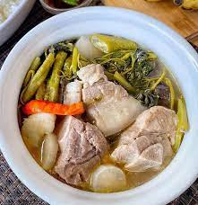

Sinigang

Pork Sinigang or Sinigang na Baboy is a sour soup native to the Philippines. This particular soup dish uses pork as the main ingredient though beef, shrimp, fish, and even chicken (this is known as sinampalukang manok) can be used. Bony parts of the pig known as “buto-buto” are usually preferred for this dish. These parts can be either of the following: pork neck bone, chopped spare ribs, chopped baby back ribs, and pork belly. Sometimes pork kasim and pigue (pork ham) are also used.
Ingredients
- Pork
- Tomatoe
- Onion
- Fish sauce
- Gabi
- Vegetables
- Tamarind
- finger chili pepper
Procedures
- Wash tamarind pods under cold, running water to remove any grit or dirt from the skins.
- Place in a saucepan with about 1 cup water and bring to a boil. Cook for about 4 to 5 minutes until soft, and the outer skins begin to burst.
- Using a fork, mash the tamarinds to release the pulp.
- Place the tamarind and liquid in a fine-mesh strainer set over a bowl.
Continue to mash with a fork, returning some of the liquid into the strainer once or twice to fully extract the juice.
- Discard seeds and skins. Pour tamarind juice into the pot.